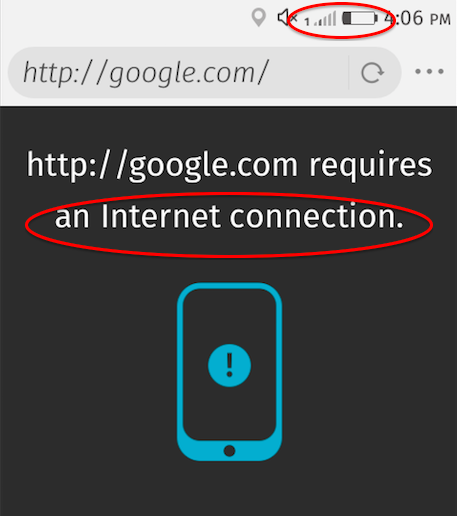

Firefox OS
Mobile Data and
Power Consumption
We shipped Firefox OS!
to 23 markets
in 15 countries
more coming
more challenging markets
It often looks like this.
Poor Network Conditions
Slow networks (3G = 2.1G)
Unreliable infrastructure
Overloaded base stations
Weather
Users too!
User research
*Very* aware of cost
Shut off data
Even wifi can cost
big opportunity to differentiate
Full-stack impact
Dropped packets
Request timeouts
Non-functional apps
Waste of user's money
Battery quickdeath
Load on base station
Very unhappy users
Very unhappy operators
Turns out...
Not new problems
Lots of research in the field
Little being applied on the Web
Huge wins possible
Graduate Research
University of Michigan
Graduate research lab on mobile performance
Mostly focused on Android on fast networks
But a lot of the findings apply...
Tail Optimization
Radio chips: high/low power mode
Radio Resource Controls (RRC) timers
High power mode stays on after activity
wasted power: "tail energy"
Fast Dormancy
Tell chip that we're done
Little/no access via chipset vendors
Can infer via power measurement
But variable per chipset/network
Even so, problematic to have that access
"Yo, I'm done."
High Latency
Local passive measurement of cellular load
Complex, requires low-level radio access
Could measure requests on ongoing basis?
Still requires high-level positive patterns
Weak Link
Bars don't tell the whole story
Strong link != low latency
Weak link != high latency
Neither signal throughput well
What to do?
What to deux.
We need to think creatively about how to address these problems in a web-developer-friendly way that quantifiably impacts users.
Web Sweet Spot
Tail energy, weak signal, high latency
App developers shouldn't have to care
Positive patterns for built-in awareness
Or at least make it super easy
Muse - PSU Capstone Project
https://github.com/mmes2/muse

Muse - Purpose
Experiment based on the research our teams did in Brasil, Columbia, Thailand, India
News reader app that targets new smartphone user, mostly offline, commutes a lot.
Muse - Features
Self-configuring (geolocation)
Auto populating
Offline reading
Content skinny
Network condition aware
JUST WORKS
Helper Libraries
Passive network info collector
Network info database
Network analysis
= Predict opportunity windows
More experiments
Non-critical requests
Proactive: piggybacking
Last-network-access timestamp
"Now is good" events
Low-budget latency analysis
XHR option to defer
Other Research
https://wiki.mozilla.org/FirefoxOS/Research